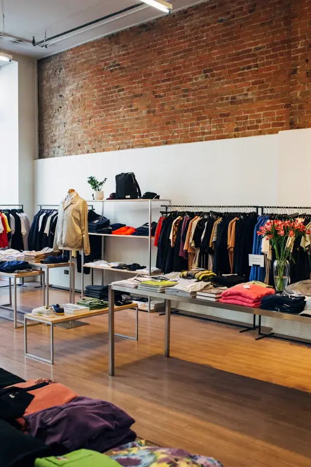
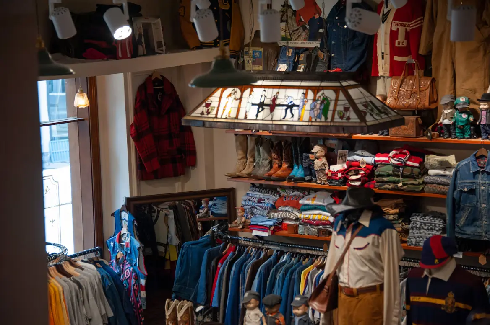
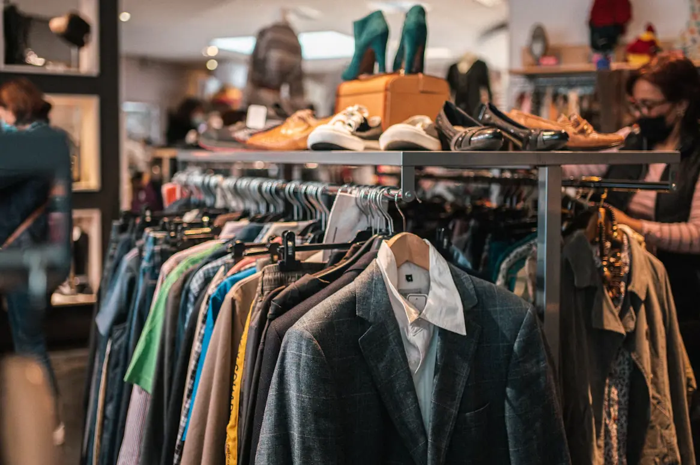

About Second Sunday
Two collectors and an old shoe repair shop
Mara and Theo met behind folding tables at a flea market that ran on the second Sunday of the month. Eight years later the name stuck, and so did the market.

Since 2018
It started with two tables
Mara spent nine years running a theater costume shop in Tampa, which means she can date a zipper by sight and fix a hem in under five minutes. Theo was the guy with the van, driving to estate sales at dawn and selling denim out of milk crates.
In 2018 they took over a former shoe repair shop on Central Ave, kept the original pegboard and the hand-painted window, and filled it with the stuff they would actually wear. A year later they started hosting their own market in the back lot, on the second Sunday, of course.
Mara
Dresses, knits and anything with a union label. Runs the free mending corner.
Theo
Denim, workwear and boots. Drove about 11,000 miles to estate sales this year.
How we source
Where the racks come from
Most of the shop is bought from St. Pete closets. Here is the honest split for 2025.
Local sellers, 55%
Our buying counter, five days a week. Neighbors, students and people finally clearing out the garage.
Estate sales, 25%
Theo's dawn runs across Pinellas, Hillsborough and Pasco, mostly closets that have not been opened since the ’80s.
Graded bulk, 15%
Hand-sorted bales of denim and tees from textile graders in the Southeast. We pick, never buy blind.
Market trades, 5%
Swaps with our Second Sunday vendors, which is how the best weird stuff shows up.
The shop's footprint
Small store, real numbers
- 38,400pieces rehomed since we opened in 2018
- 23 tonsof clothing kept out of the landfill, by our estimate
- $212Kpaid out to local sellers in cash and credit
- 1,140 lbof passes donated to St. Pete shelters in 2025
From our own sales and buying records through October 2026. Weight is estimated at 0.6 kg per piece. We have used paper bags only, and zero plastic ones, since day one.
The space
1,800 square feet of good stuff
- The $5 rail by the front door, restocked daily
- Two fitting rooms with real doors and good mirrors
- The mending corner: free buttons and small seam fixes on anything bought here
- A turntable that takes requests on Saturdays
- The back lot, home of the Second Sunday Market


Come say hi.
Mara is usually at the register, Theo is usually in the van.